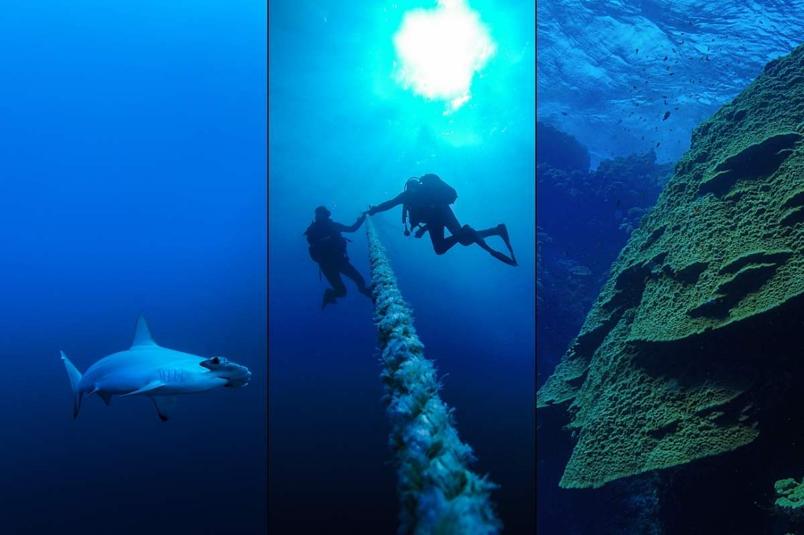

📘 7 negaidīti noteikumi nirējiem 50Plus
Kļūdas, kuras nepamani pirms niršanas
📥 LejupielādētPat pieredzējuši nirēji to mēdz palaist garām
Kontrolsaraksti, maršruti un materiāli pirms niršanas.
Tiem, kuri turpina nirt
Visi materiāli ir bez maksas. Bez reģistrācijas un e-pasta.
Kļūdas, kuras nepamani pirms niršanas
📥 LejupielādētPat pieredzējuši nirēji to mēdz palaist garām
Ja domā par niršanu bērnam
Kā iepazīstināt bērnu ar niršanu bez spiediena un kļūdām
📥 Apskatīt kontrolsarakstuKontrolsaraksts ir piespraustajā ierakstā grupā

Dažreiz pietiek ar atgādinājumu, lai atkal sakrāmētu ekipējumu...
📥 LejupielādētVari doties vienkārši atvaļinājumā. Vai arī trāpīt sezonā.
📥 LejupielādētAtšķirība ir jūtama zem ūdens.
Masku paņem visi. Aizmirst to, kas patiesībā ir svarīgi.
📥 LejupielādētSezonas, maršruti un vietas, kuras neizvēlas nejauši.
Kartes un orientācija pirms brauciena
AtvērtTā ir pieredze, kas uzkrāta gadu gaitā.
Nē. Bet ar laiku kļūst redzams, kas patiešām nirst.
Kādam niršana pazūd. Citiem tā paliek par dzīves daļu.
Pieredze, diskusijas un niršanas plāni.